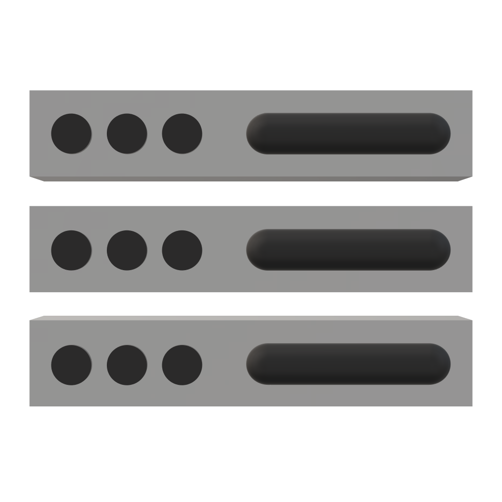
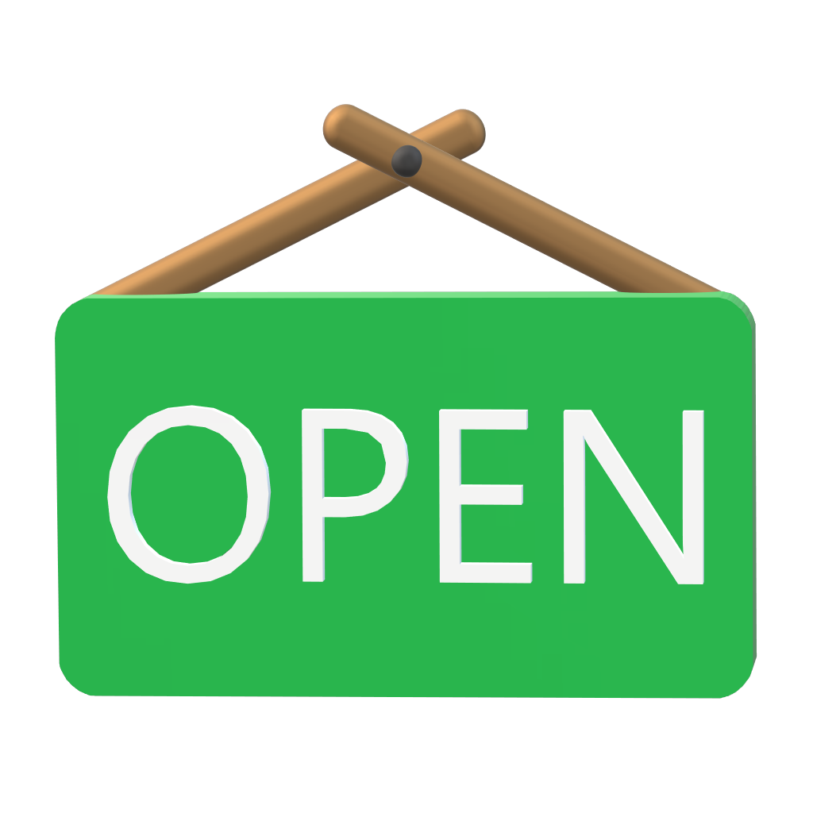
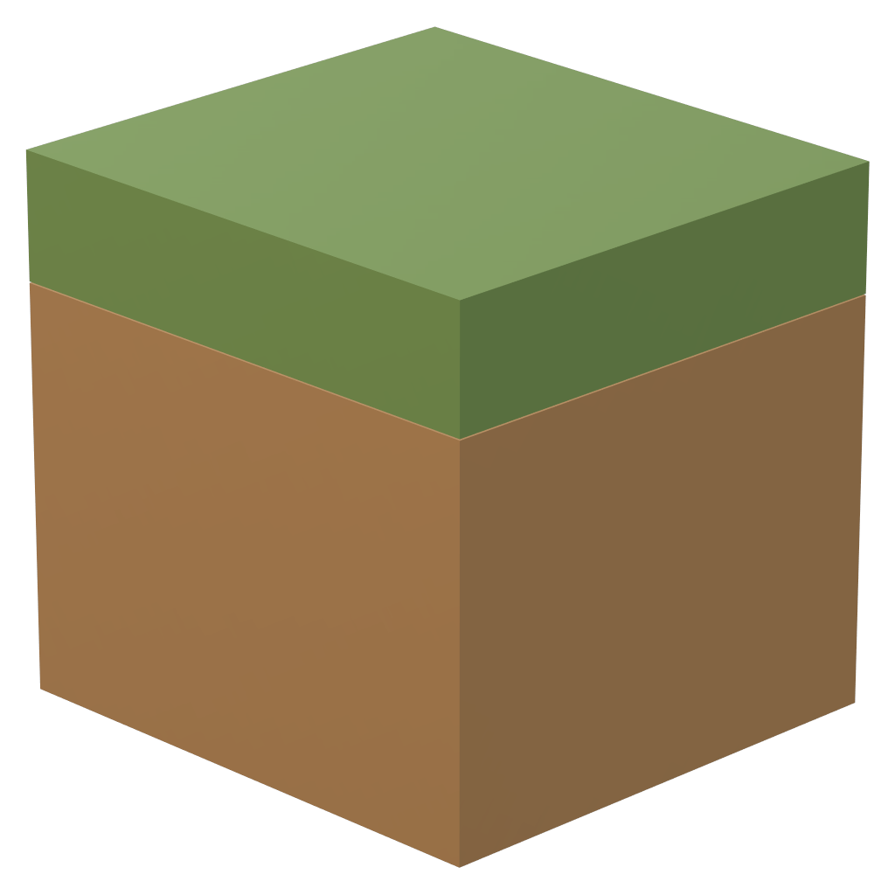

Dienste
Durch eine unabhängige Infrastruktur wird von uns ein breites Angebot an Diensten bereitgestellt. Ziel ist dabei insbesondere den Lernalltag von Studenten der Hochschule Bremerhaven erheblich zu erleichtern. Dafür stellen wir Lernplattformen, Experimentierumgebungen und mehr zur Verfügung. Wir arbeiten jedoch auch mit Dozenten eng zusammen, um diese in der Lehre zu unterstützen.

Spielwiese ⋅ Linux
Wir möchten den Studenten eine Plattform zum Experimentieren und Lernen bereitstellen. Angetrieben von Debian Testing und ohne Restriktion auf Open-Source Software bieten wir Interessierten eine Linux-Umgebung an.
Weitere Informationen
Mit Linux-Server verbinden
Neuer Dienst
Dieser Dienst ist zum derzeitigen Zeitpunkt noch in der Entwicklung. Sobald der neue Dienst bereit zur öffentlichen Vorschau ist, wird dieser hier zu finden sein und kann dann ausprobiert werden.
Weitere Informationen
Dienst abrufen
Verfrüht
Ein digitaler Stundenplan für die Hochschule Bremerhaven (Fachbereich 2) mit einer modernen Oberfläche und verschiedenen Anpassungsmöglichkeiten für das Erstellen des persönlichen Stundenplans auf mobilen Geräten und im Web.
Weitere Informationen
Verfrüht abrufen

Geöffnet
Der einfache Weg auf dem aktuellen Stand zu bleiben, wenn es um die Öffnungszeiten von ausgewählten Laborräumen an der Hochschule Bremerhaven geht. Neben dem dynamischen Zeitplan werden auch Mitteilungen unterstützt.
Weitere Informationen
Geöffnet abrufen

Minecraft-Server
Kennst du Minetest? Wir auch nicht! Ein für Studenten betriebener Community-Server soll die Spieler dort abholen, wo sie sich bereits befinden. Der Minecraft-Server soll die Leidenschaft und Kreativität der Spieler fördern.
Weitere Informationen
Minecraft-Server beitreten

Website
Erhalte neueste Informationen zu Diensten, Veranstaltungen und Projekten der Allianz für Informatik, Innovation und Infrastruktur. Lerne unser Team kennen und wie wir an Projekte herangehen.
Weitere Informationen
Website abrufen